Эксперимент № 1 Дата: 27 окт. 2026
Предпосылки
Собрать первую схему и посмотреть, есть ли генерация стокса с катушкой 10 км SMF.
Изменения с схеме
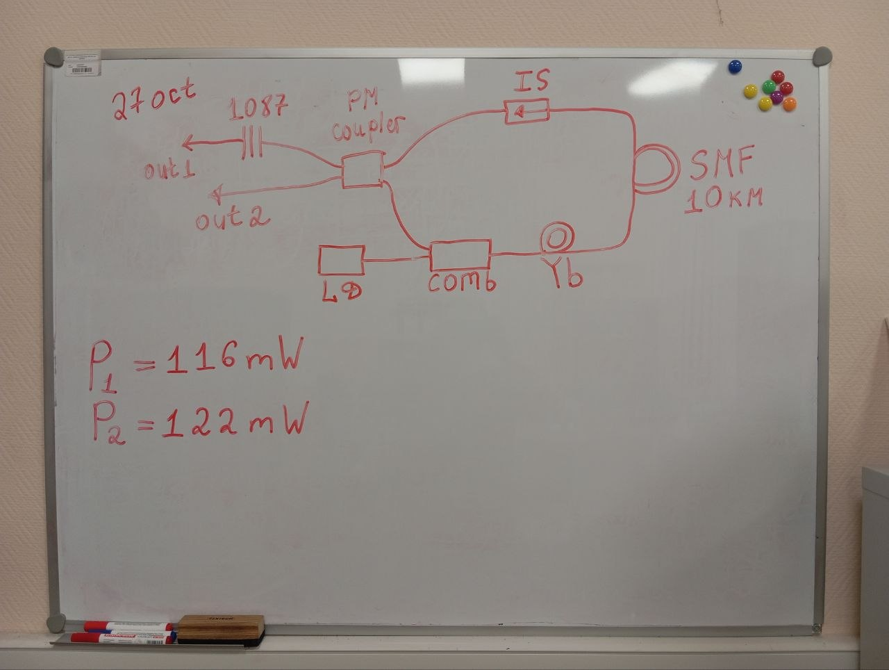
Результаты
P1=116
P2=122
P2=122


Наблюдения и выводы
- В спектре наблюдается стоксов компонент с длиной волны около 1142 нм, а также излучение накачки с длиной волны около 1087 нм.
Эксперимент № 2 Дата: 28 окт. 2026
Предпосылки
Посмотреть, что будет, если заменить катушку 10 км SMF на 650 м P₂O₅ (стокс ожидается около 1270 нм).
Изменения с схеме
Катушка 10 км заменена на P₂O₅ 650 м. Решётка только одна, 1087 на out1.
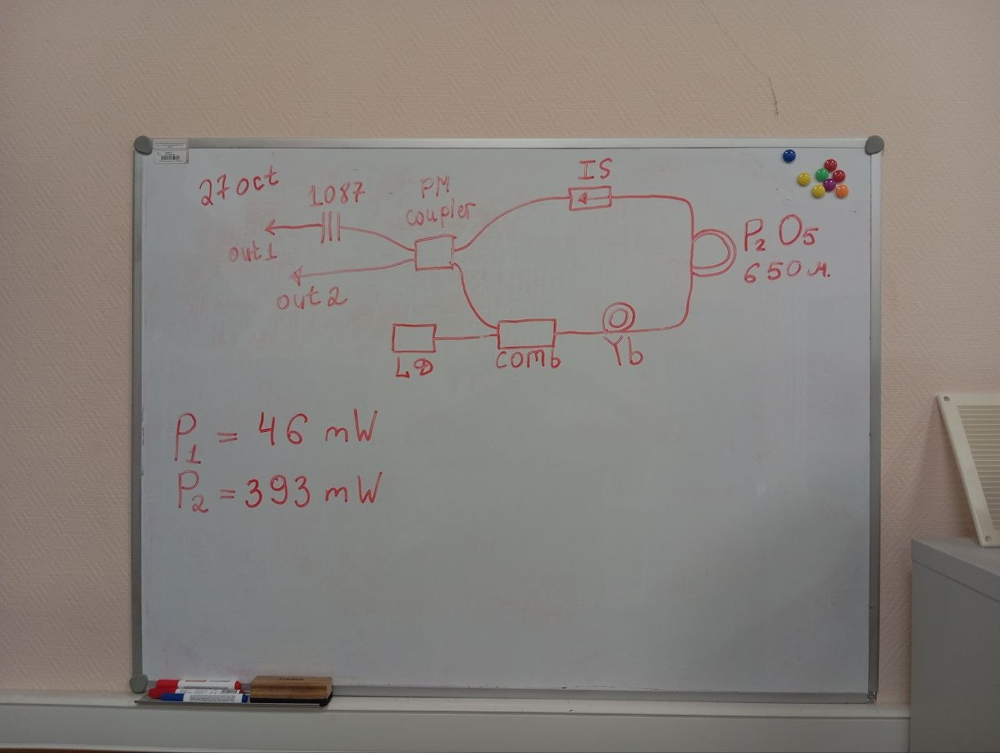
Результаты
Мощности (мВт):
P1=46
P2=393
P1=46
P2=393

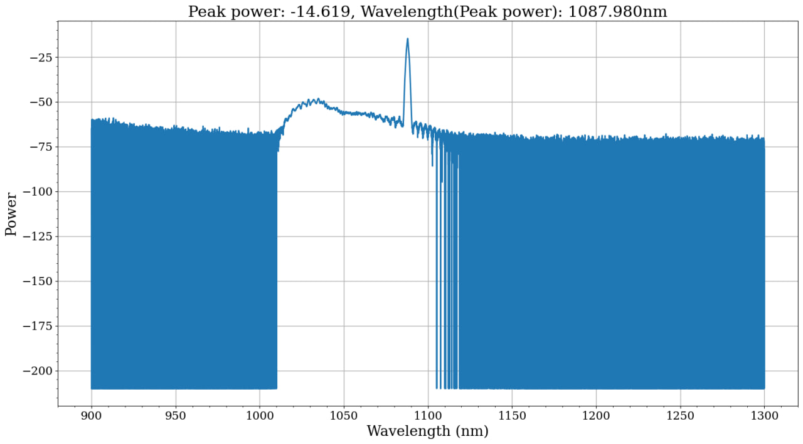

Наблюдения и выводы
- Виден только пик ~1088 нм.
Эксперимент № 3 Дата: 28 окт. 2026
Предпосылки
Добавить вторую решётку (1270) как резонатор для стокса.
Изменения с схеме
Решётку 1270 приварили последовательно за решёткой 1087 на out1.
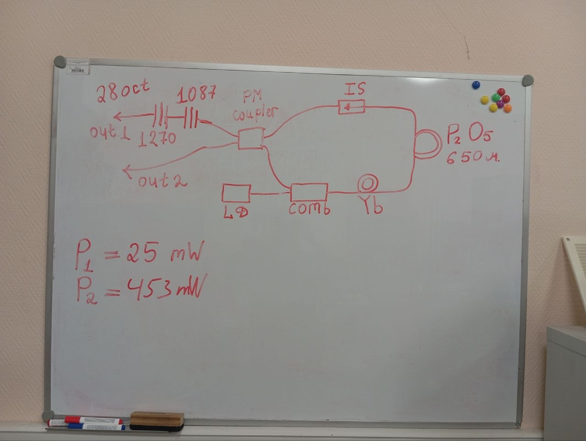
Результаты
Мощности (мВт):
P1=25
P2=453
P1=25
P2=453

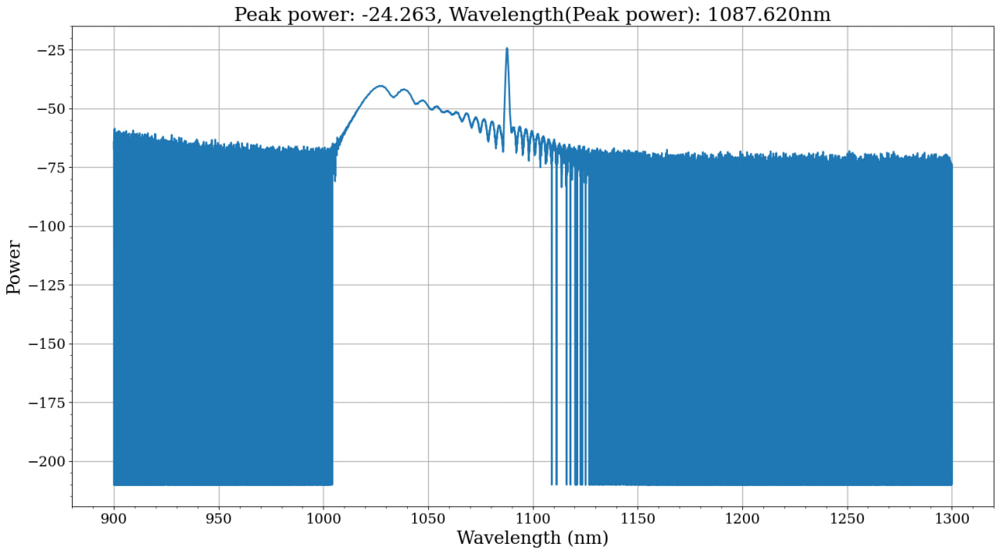
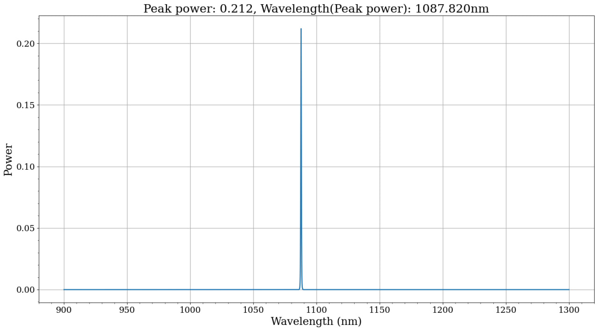
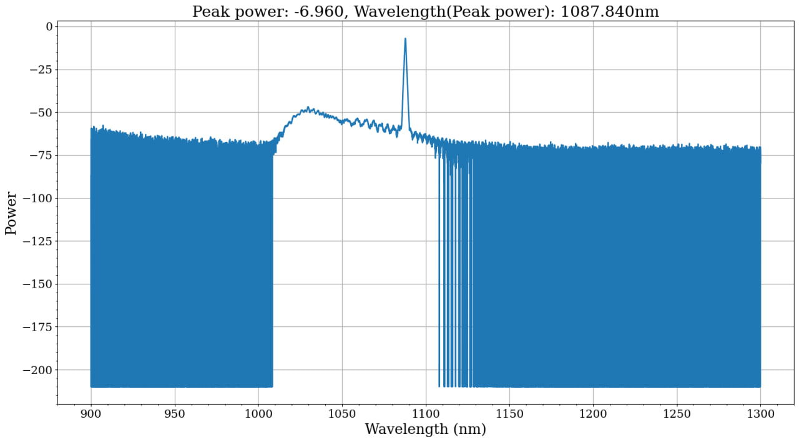
Наблюдения и выводы
- И на out1, и на out2 только пик ~1088 нм, стокса нет.
Эксперимент № 4 Дата: 28 окт. 2026
Предпосылки
Попробовать приварить решётку 1270 на втором выходе.
Изменения с схеме
Решётка 1087 осталась на out1, решётка 1270 переставлена на out2.

Результаты
Мощности (мВт)
P1=46
P1=46
P2=295


Наблюдения и выводы
- Только пик ~1088 нм, стокса нет.
Эксперимент № 5 Дата: 28 окт. 2026
Предпосылки
Было предположение, что изолятор блокирует стокс, поэтому его убрали.
Изменения с схеме
Из схемы убран изолятор.
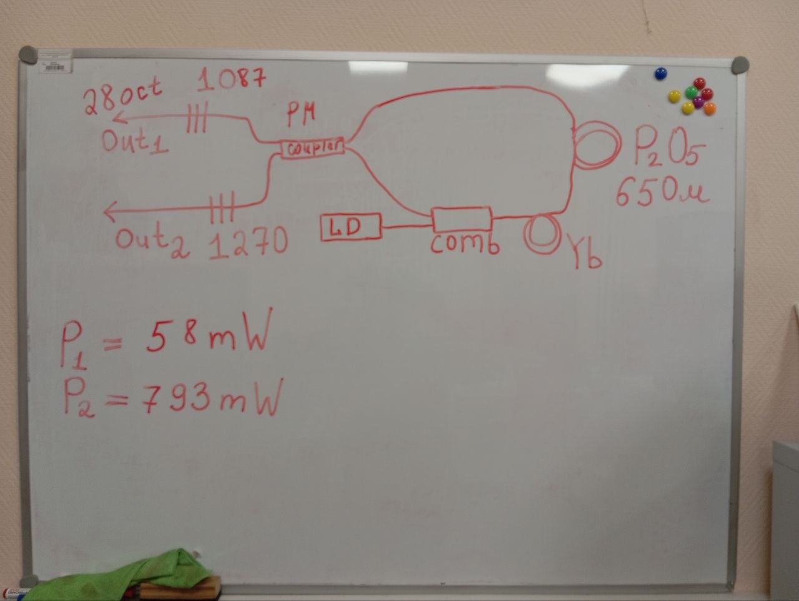
Результаты
P1=58
P2=793
P2=793


Наблюдения и выводы
- Мощность на out2 выросла почти в 3 раза (было 295, стало 793). Но стокса по-прежнему нет, виден только пик ~1088 нм.
Эксперимент № 6 Дата: 30 окт. 2026
Предпосылки
Проверить, не виноват ли лазерный диод.
Изменения с схеме
Заменили диод накачки на другой (из лазера 1080).
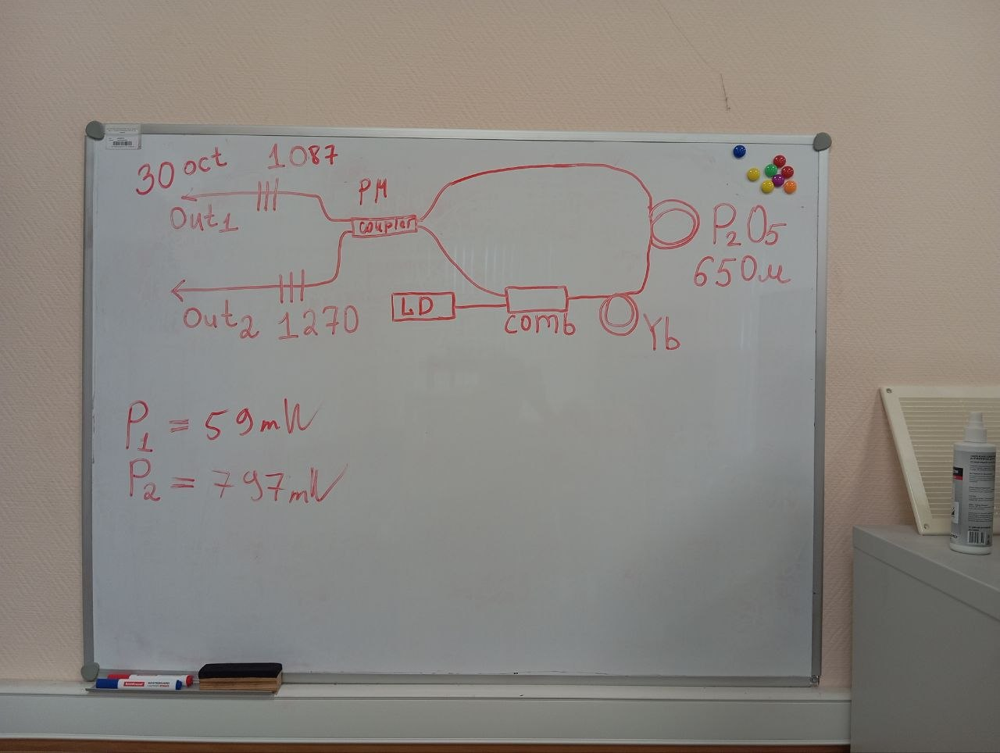
Результаты
P1=59
P2=797
P2=797
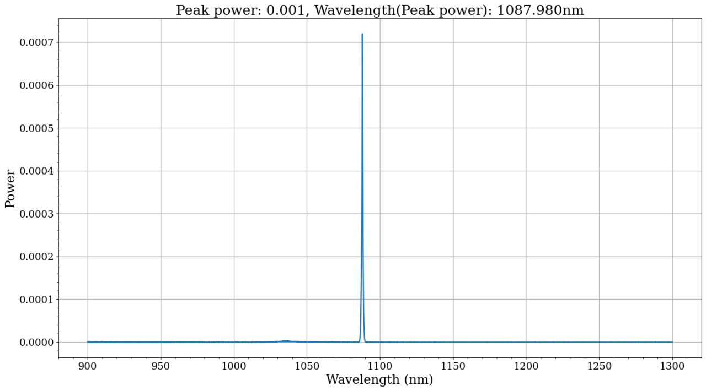
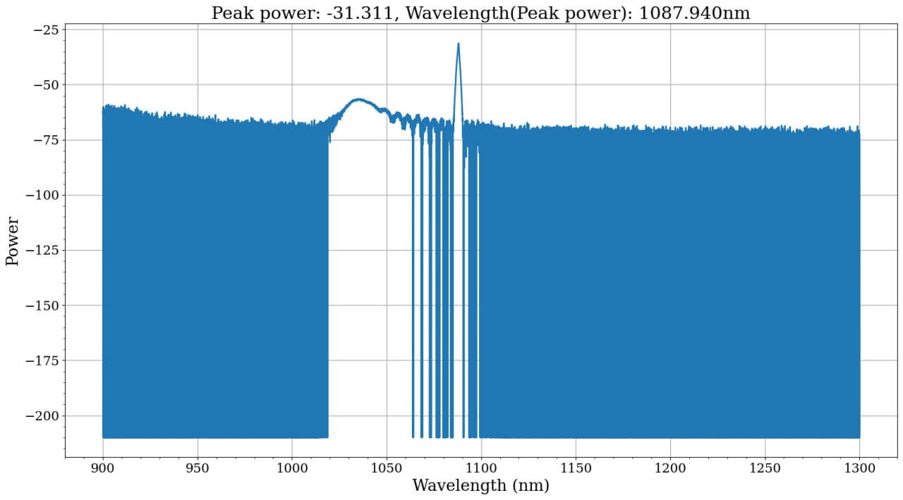


Наблюдения и выводы
- Только пик ~1088 нм, стокса нет. Мощности почти те же, что со старым диодом, значит дело не в диоде.
Эксперимент № 7 Дата: 30 окт. 2026
Предпосылки
Вернуть изолятор на место.
Изменения с схеме
Изолятор снова в схеме.
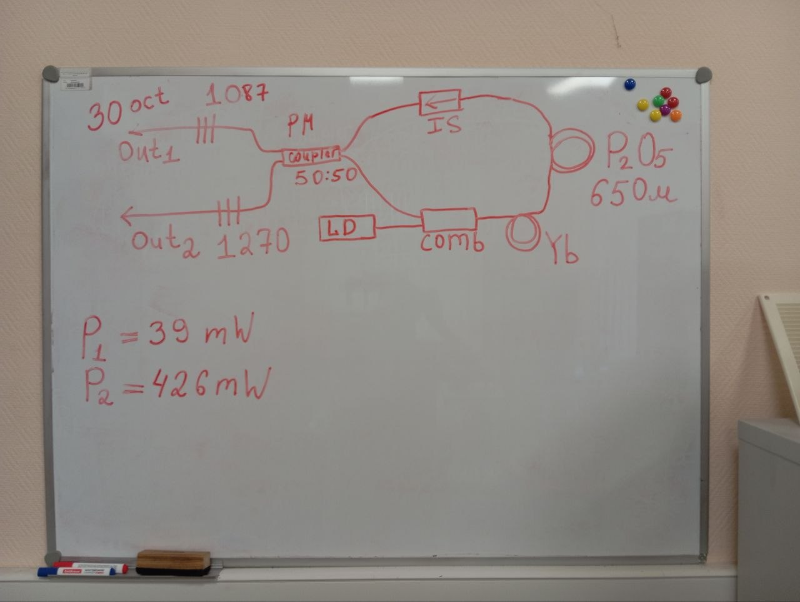
Результаты
P1=39
P2=426
Спектры не изменились. Они точно такие же как и в прошлом.
—P2=426
Спектры не изменились. Они точно такие же как и в прошлом.
Наблюдения и выводы
Спектр не изменился, виден только пик 1087 нм, стокса нет.
Эксперимент № 8 Дата: 30 окт. 2026
Предпосылки
Было предположение, что решетка 1270 нерабочий.
Изменения с схеме
Решётку 1270 заменили на другую (решётка 1270 №3).

Результаты
P1=40
P2=427
Спектры не изменились. Видно только 1088нм.
—P2=427
Спектры не изменились. Видно только 1088нм.
Наблюдения и выводы
- Ничего не изменилось, виден только пик 1088 нм. Гипотеза про нерабочую решётку не подтвердилась.
Эксперимент № 9 Дата: 9 нояб. 2026
Предпосылки
Убрать изолятор и проверить работу лазера. Перед этим полностью восстановили лазер для биологов (вернули родной диод и катушку), он работает как надо.
Изменения с схеме
Схема с каплером: изолятор убран, катушка P₂O₅ 650 м.
—Результаты
P1=45 мВт, P2=582 мВт.
—Наблюдения и выводы
- Стокса нет, только 1087 нм.
Эксперимент № 10 Дата: 10 нояб. 2026
Предпосылки
Проверить, как изолятор работает на длине волны 1261 нм, используя рабочий лазер для биологов.
Изменения с схеме
Взяли изолятор. Переварили SMF коннекторы с двух сторон. Включили лазер для биологов. Выбрали канал 1261нм. Сначала сняли просто спектр этого канала. Потом посветили изолятор с этим излучением с двух сторон: прямом направлении (in-out) и в обратном направлении (out-in).
—Результаты
P(без изолятора)=60 мВт, P(in-out)=8.1 мВт, P(out-in)=1.4 мВт. Гнули волокно перед изолятором, поляризацию крутили: разницы нет. После замены патч-корда и очистки коннекторов спектры и мощности те же.


Наблюдения и выводы
Изолятор на 1261 нм пропускает обратное излучение (1.4 мВт против 8.1 мВт в прямом направлении, то есть изоляция всего ~7–8 дБ). В прямом направлении потери большие (60 → 8.1 мВт).
Эксперимент № 11 Дата: 16 нояб. 2026
Предпосылки
—
Изменения с схеме
Посмотрели спектры и осциллограммы. Потом на out1 сварили SMF-каплер 90/10, через коннектор соединили новый каплер с out2.
—Результаты
В районе 1270 нм виден очень маленький пик.
—Наблюдения и выводы
Возможные причины:
- мощности диода недостаточно;
- решётка 1270 не совпадает по длине волны с 1087, то есть не работает как резонатор для стокса.